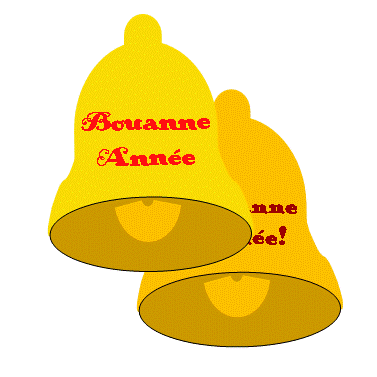

Moussieu l'Éditeu,
Dîmanche au sé j'tiomes assis, la Merrienne et mé en d'vant du feu, quand tout d'un coup, ou m'dit comme chonna: "Ch'est l'Jour de l'An d'main, Ph'lip," et il est temps d'faithe tchiques bouonnes résolutions. Y'as-tu pensé?"
"Nânin," j'l'y raiponnit, "mais pourtchi en faithe? L'année passée tu tais pour abandonné tes mauvaises habitudes et chèsqu'y's'arrivit?"
Ou me r'gardit sans dithe mot, tréjous un signe qu'oulle a tout-plien à dithe, et j'continuit:-
"Par exemplye, tu promint que tu n'te mârithais pas d'vant l'Vendredi Saint, mais dans mains d'une semaine tu tais à m'fichi l'pot-à-tais à la tête et à me m'nichi ôv le pôqueur. Et tout simplyement parsque j'avais r'mértchi qu'tu'avais trop d'bèque."
"As-tu fini," ou d'mandit, d'un ton sévèthe.
"Pour le moment," j'l'y dut, "mais si fallait j'pouôrrais en dithe ben d'autre. J'en ai plien l'dos mé d'chais résolutions."
"Bon," ou dit, "eh ben, si ch'est man tou te r'souveins-tu d'avé promint qu'tu t'comportethais sûs touos les sens jusqu'au Lundi d'Pâques? Mais l'jour d'après, parsque tchiquechose ne t'avait pas pliu, tu tais d'si mauvaise humeur que tu bâillit un coup d'chouque au pouôre tchan, tchi n'avait pas fait d'ma à personne, et un co-d'pid à la catte tchi la fliantchit d'un but d'la tchuîsine à l'autre. As-tu r'oublié?"
Je m'grattit la tête. "il est vrai, Merrienne," j'l'y dit, "que j'agit sans trop d'raison chutte bordée-là, mais y faut qu't'avoue que v'la tchi n'duthit pas longtemps, un quart-d'heuthe après j'avais la catte sûs mes g'nors et l'tchan dormait paisiblyement à mes pids. La véthité en est que je n'me trouvais pas ben, et qu'la vieille Nancy m'avait donné un boeu quand j'voulais une géniche. Etout j'avais grand ma ès dents. Mais l'jour d'après nou n'y pensait pûs."
"Nan, y'a chonna entre nos deux," ou dit. "J'pouvons avé un mio d'brit par bordée, mais v'la tchi s'pâsse ben vite. Quant à l'affaithe du pot-à-tais et du pôqueur, chu jour-là toutavait tait mal. En lavant la vaisselle j'avais bûchi yunne des tâsses que j'avais yeu d'ma belle-mèthe, pûs tard je m'drotchit sûs l'pas-d'hue et faillit m'rompre une gambe; toute la matinée y v'nait des bouffées d'vent ava la chim'née et pour agvé tout, le moment que j'mint le linge dehors y s'mint à tchais d'la plyie. Tout probablye j'éthais peut enduthé chonna, mais quand tu qu'menchit à t'pliaindre de tes minsèthes tchiquechose cratchit dans ma tête, et je n'savais pas tchèsque je faisait. J'en eut grand r'grét, comme tu l'sais."
"Vèthe, ma vieille," j'l'y dit, "et mé étout je r'grétte tréjous quand j'n'ai pas agi comme un homme, et j'fais d'man mûs d'amendé. Mais au sujet d'chais résolutions, êst-che que tu n'crai pas qu'tu f'thais mûs d'abandonné l'idée?"
"Nânin, pas tout à fait," ou dit. "V'la tchi n'fait pas d'ma d'abandonné tchiques pétites habitudes tchi niaisent à d'autres. Par exemple, tu pouôrrais prométtre de n'entré pas dans ma tchuisine avec tes sales chabots quand j'veins d'la scrobbé. N'y'a rain tchi m'irrite pûs qu'chonna."
"Bon," j'l'y dit, "j'n'oubliethai pas, Y'a-t'y tchique autre chose?"
"Je crai," ou dit, "que quand tu t'lève au matin, tu n'dévthais pas allumé ta pipe d'vant d'habilyi. Pûs d'une fais j'en ai tait prèsque malade."
"Ch'est décidé," j'l'y dit. "Ach'teu êst-che fini?"
"Y m'semblye," ou raiponnit, "que tu dév'thais alé en ville au mains touôs les trais mais te faithe copé les g'veux et trimmé ta barbe. Etout tan vîsage, tu dév'thais le lavé une fais par jour, sans manque. J'voudrais, avec chonna, te vais avec les mains un mio pûs propres, et j's'y prête à t'remplyi l'trais avec l'iau caude touos les Vendredis, et même te donné du savon parfumé pour que tu prenne un bain."
"Merci ben des fais," j'l'y dit, "mais n'en v'la pas mal pour agnièt. Chen que j'veur savé, ach'teu, ch'est tchèsqye tu t'en vas faithe pour balachi tout chonnechin."
J'vos racont'tait l'restant d'l'histouëthe la s'maine tchi veint, Moussieu l'Editeu.
Ph'lip
6/1/1951
Viyiz étout: